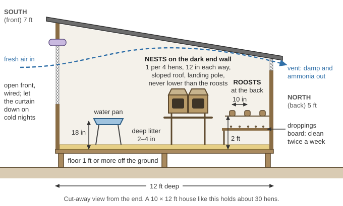
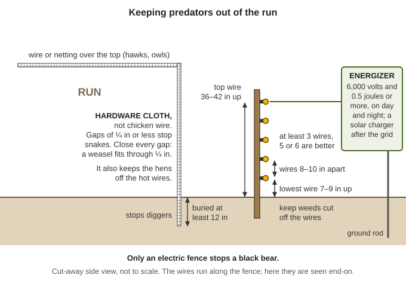
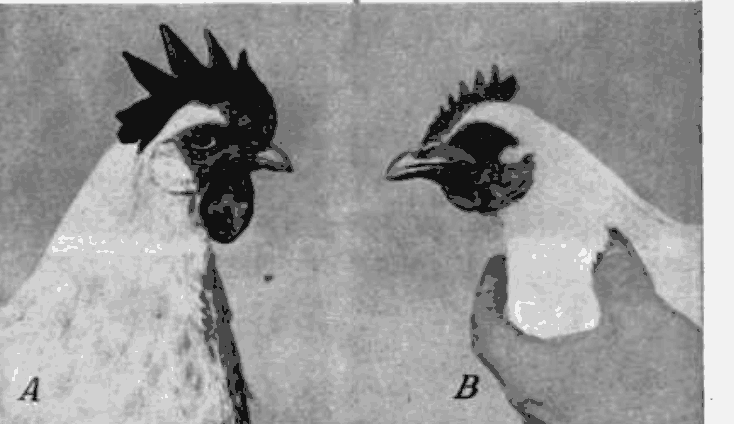
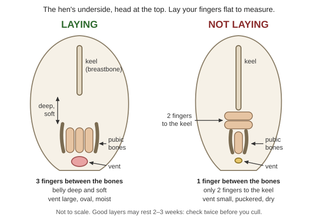
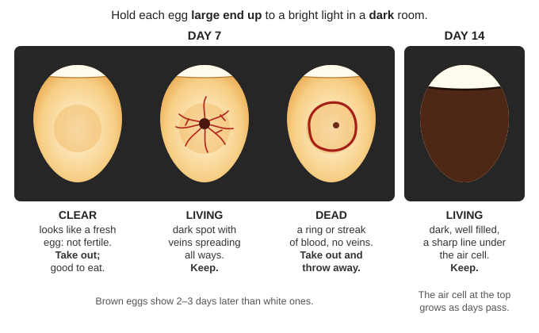

How to keep a flock of chickens that feeds a household and renews itself with no feed store, vet, hatchery or electricity: breeds that still go broody, the coop, local predators, feeding on range, bugs, scraps and home-grown grain, eggs through the seasons, hatching under hens, raising chicks with no heat lamp, roosters, health with no vet, culling, slaughter, manure, and how many birds a family needs. The books are in Small-Livestock\Chickens and Small-Livestock\Slaughter-Processing, and in Animals\Poultry, Animals\Veterinary and Animals\Planning-Predators-Toxic-Plants (all under Southern-Oregon\; the download list is local/library-files.txt). Where this guide works a number out itself it says (arithmetic); check it with the Calculator.
The short version
Lock birds in every night behind hardware cloth, not chicken wire, buried at least 12 inches. A weasel fits through a ¼-inch gap (Kentucky ID-245, pp. 3, 6). Only an electric fence stops a black bear (ODFW, p. 2).
Keep breeds that go broody (Plymouth Rock, Rhode Island Red, Wyandotte, Orpington, Australorp). Hybrid layers and Cornish-cross broilers rarely sit and won't rebuild a flock (FAO, p. 10).
A broody hen is your incubator and brooder. Set 10–15 eggs; chicks hatch on day 21; she keeps them warm with no fuel at all (USDA FB 1363, p. 3).
On little bought feed expect about 100 eggs a hen a year, few in winter and during the molt (FAO, p. 9). 6–12 hens keep a family in eggs most of the year (FB 1508, p. 8).
Calcium, grit and clean water every day. Never feed moldy grain, spoiled meat or maggots bred on carcasses (botulism), and keep foxglove and Scotch broom out of pens.
One rooster per 10–12 dual-purpose hens; eat spare cockerels before 12–18 weeks, when they start fighting and chasing hens (Practical Poultry Raising, p. 84).
Marek's, bird flu and the chronic coughs have no cure. Cull, burn or bury deeply, wear gloves, and never eat or trade a bird that died of disease (FB 1508, p. 30).
The old bulletins' lice and mite remedies are poisons (sodium fluoride, nicotine sulfate, DDT, carbolic acid). See "Old advice in the library to ignore".
Choosing breeds that renew themselves
Every bird must be able to come from your own flock. Hatchery hybrids can't: they have "very low mothering ability and broodiness" and need bought chicks, brooders and balanced feed, and crossbreds bred among themselves drop back in production the very next generation (FAO, pp. 10, 62). High egg numbers and broodiness pull against each other in the same bird (p. 63), so a self-renewing flock lays a little less and raises its own replacements.
Use up while feed lasts; don't plan a future on them
First eggs: Leghorns at about 6 months; Rocks, Reds and similar at about 7 months (USDA FB 1727, p. 21).
Meat birds: Cornish-cross are ready in 6–8 weeks (Kansas State EP71, p. 1); a hybrid broiler reaches 4.4 lb in 7 weeks on under 8.8 lb of feed (Raising Healthy Poultry, p. 13). They need about 22% protein starter (PNW 477, p. 2), and the fastest growers die of heart failure, "water belly" (Raising Healthy Poultry, p. 88). After collapse, your meat is the surplus cockerels and old hens of a dual-purpose flock.
Colored birds last longer on range: hawks spot solid colors, especially white, more easily (FAO, p. 10).
Bantams eat much less but lay fewer, smaller eggs (FB 1508, p. 17); a few broody bantam hens make handy spare incubators (rule of thumb).
Starting stock: healthy, vigorous birds from a reliable breeder; yearling hens breed better than pullets (FB 1508, pp. 8–9). Healthy-looking newcomers often carry disease in (UF PS044, p. 3): keep new birds apart for a month(rule of thumb).
Where: dry, drained ground out of the prevailing wind, facing south with part of the south side open and curtained in cold weather (FB 1508, p. 19); near where people walk, raised at least 1 ft against rats, skunks and raccoons (OSU EC 1644, p. 1); away from overhanging trees and brush that hide predators (ODFW, p. 1).
A shed-roof house 10 ft long, 12 ft deep, 7 ft high in front and 5 ft at the back (FB 1508, p. 20) holds about 30 hens at 4 sq ft (arithmetic). Crowding breeds feather picking, cannibalism and egg eating (FB 1841, p. 13).
Roosts:1–2 inch square lumber, edges rounded, 2 ft off the floor, 10 inches apart, 5–10 inches per bird (OSU EC 1644, p. 2; roost layouts) — about 8 for Leghorns, 10 for Rocks and Brahmas, over a droppings board cleaned twice a week (FB 1508, p. 22). Roosts hung on wire are harder for mites and ticks to reach (Practical Poultry Raising, p. 133).
Nests:one per 4 hens, about 12 × 12 × 12 inches, never lower than the roosts, with a 45° roof so no one sleeps on top; a 5-gallon bucket on its side works (OSU EC 1644, p. 3). Put them in the darkest corner — dark nests entered from the back discourage egg eating (FB 1508, p. 22) — and close them at night (Raising Healthy Poultry, p. 34).
Air without drafts: chickens need more fresh air for their weight than any other livestock (Raising Healthy Poultry, p. 17) and breathe out up to ¾ pint of water a bird a day (Practical Poultry Raising, p. 96). Vents in gables or eaves carry off ammonia and damp; no insulation needed, just no drafts on roosting birds (OSU EC 1644, pp. 1–2). In our wet winters an ammonia smell or damp litter means more vent, not less(rule of thumb).
Water and minerals: hang the water pan about 18 inches up so litter stays out (FB 1508, p. 24); grit and shell in their own hoppers (p. 23).
Run:1 × 2-inch mesh, top covered, fence buried 6–12 inches (OSU EC 1644, p. 1; Kentucky says 12+). Better, two yards, one growing grass or a crop while birds use the other (FB 1508, p. 25). A movable pen (a chicken tractor) puts birds on fresh grass and breaks the parasite cycle.

Roosts at the back over a droppings board, nests in the dark, and fresh air moving high above the birds (a diagram drawn for this guide).
Deep litter, the easiest floor for a home flock:
Start with 2–4 inches of chopped straw, wood chips, dry leaves or shavings; sawdust only after 4 weeks of age; replace wet litter at once (Raising Healthy Poultry, p. 31). Never moldy or wet bedding: it causes aspergillosis, a fungal pneumonia (UF PS044, pp. 6–7).
Add fresh litter on top to keep it dry (FB 1538, p. 17); turn it often in damp weather. Hens dust-bathe in it against lice and lay well on it, but worms and coccidiosis build up if it stays wet (Practical Poultry Raising, p. 91).
Clean out and compost it (see "Manure, litter and feathers").
Hardware cloth, buried at least 12 inches. Chicken wire keeps chickens in, not raccoons out. Gaps of ¼ inch or less stop snakes too (p. 4).
Lock birds in every night. Feed or water them inside at dusk and they learn to go in on their own. Leave no feed in the run overnight and remove sick and dead birds at once (p. 6).
Cover the run against hawks and owls (orange netting shows up best to them) and remove perches within 100 yards. Hawks and owls are federally protected — don't shoot them (p. 5).
Trap only the animal that gets in. A dead predator is soon replaced by another (p. 6).
Don't count on lights or noise: animals get used to them, and steady light near the coop upsets laying (p. 6; ODFW, p. 1).
Black bears break through coops and chicken wire; three chickens are about 4,500 calories to a bear and chicken feed about 1,500 a pound. Store feed in a locked building or bear-proof container, never in the coop (ODFW, p. 1). A properly installed electric fence, on day and night, is the most reliable protection (p. 2): at least 3 wires (5–6 better), lowest 7–9 inches up (lower for skunks and raccoons), top 36–42 inches, wires 8–10 inches apart, an energizer of at least 6,000 volts and 0.5 joules, hardware cloth inside so hens can't touch the wires, and weeds kept off (building a bear fence, step by step (beehive version)). After the grid that means a solar fence charger — see the Off-Grid Power guide.

Buried hardware cloth stops diggers, a covered top stops hawks and owls, and only the hot wires outside stop a bear (a diagram drawn for this guide).
Cougars: fence and shelter stock and shut them in at night; Oregon law lets a landowner kill a cougar that is damaging livestock (ODFW, p. 2).
What a hen needs:6–7 lb of feed a month, laying or not (FB 1727, p. 5), or 70–95 lb of grain a year (FB 1508, p. 25); about 16% protein and 3–4% calcium for layers, 18–20% protein for chicks (PNW 477, p. 2); and 2–3 times as much water as feed by weight (p. 3). Grain alone is short of protein, so they need "meat food": bugs, worms, milk, scraps (FB 1508, p. 27).
Range, bugs and worms
A household flock of 10–20 may need nothing but table scraps, greens and insects from the garden; bigger flocks do better with a few handfuls of grain (Raising Healthy Poultry, p. 39).
Foragers eat insects, worms, snails, seeds, grass and leaves: village hens' crops held 72% household waste, 13% grass, 8% worms, snails, ants and flies; they ranged 120–190 yards, and cattle and goat pens were favorite spots (FAO, pp. 17–18). Range is worth most in spring and summer, little in late fall and winter (PNW 477, p. 4).
Maggots: soak plant stalks or husks with some droppings, let flies lay, and take the larvae at 5–7 days, before they fly; shade the tank in the heat (FAO, p. 24). Black soldier fly larvae are a common choice (rule of thumb). Never feed maggots from carcasses or spoiled meat: they carry botulism ("limberneck") (FB 1652, p. 43).
Earthworm beds:25 m² (270 sq ft) made 2.2 lb of worms a day, extra protein for 50 chickens — but worms and snails can carry poultry tapeworms (FAO, p. 24).
Scraps, milk, sprouts and greens
Mix each day's table scraps into a moist grain mash; nothing sloppy or heavily salted (FB 1508, p. 26). No onion tops, geranium leaves or strong-flavored scraps — they taint eggs (p. 27). Scratch grain, scraps and greens: only what they clean up in about 20 minutes; too many lower laying (PNW 477, pp. 3–4).
With a dairy goat or cow: layers can live on skim milk or buttermilk to drink, all the grain they want and oyster shell — about 4–5 gallons of milk a day per 100 hens (FB 1841, pp. 23–24). Milk draws flies that spread tapeworm: move the pans daily (p. 24). See the Milk, Butter & Cheese guide.
Sprouted oats for winter greens (FB 1508, p. 27): in pails with small holes in the bottom, soak a day's oats 24 hours, then move them to a second pail, moistened, then a third, one pail a day; after 5 days they are ready. Start a pail every day for a steady supply.
Greens all the time (clippings, cabbage, kale, clover) supply vitamin A; sunshine supplies vitamin D (FB 1841, p. 8). Chicks with no sun or greens get leg weakness (FB 1508, p. 16).
Calcium, grit and salt
Calcium always: oyster or clam shell, limestone, or eggshells boiled, dried and crushed small so hens don't learn the taste. The flock's own shells aren't enough; old hens and hot weather need more; short hens start eating their eggs (Practical Poultry Raising, p. 117).
Grit: rough gravel the size of small peas; ranging birds find their own, penned birds must be given it (p. 116; FB 1508, p. 28). River gravel is best (FB 1841, p. 7); oyster shell is too soft to be grit (PNW 477, p. 4).
Salt about ½–1% of a mash; bone meal for phosphorus when there's little meat or fish in the feed (FB 1841, p. 7). Not more: chickens poison easily on salt (Raising Healthy Poultry, p. 47).
Storing feed and the dry season
Store grain dry. Mold grows above 11% moisture and leaves a poison (aflatoxin) even after the mold is gone (FAO, p. 48). Never feed musty or rancid feed (FB 1841, p. 13).
Our dry season: scavenged feed dries up (FAO, p. 36) — here roughly July–October when the grass browns. Store grain, squash and roots for summer as well as winter, or cut the flock to what the feed supports before then (rule of thumb).
Plants that poison chickens
📷 Not sure what's growing in the pasture? Photograph it with the plant identifier (under Tools): it suggests a name and flags poisonous groups. Then check that name against this list.
The ones that grow here (WSNWCB, pp. 54–55): foxglove, Scotch broom, poison oak, bracken fern, death camas, poison and water hemlock, lupines, St. John's wort, horsetail, creeping buttercup, rhododendron, nightshades, jimsonweed, tansy, false hellebore, black locust, snowberry and clematis. Penned birds are at more risk — they eat what they're given, while ranging birds mostly avoid these (p. 54). Signs: trouble breathing, seizures, weakness, stumbling, diarrhea, sores on bare skin (p. 55). (The list also names alfalfa and yarrow, which the USDA bulletins feed routinely; feed them in a mix, not alone.) Also never feed avocado, raw dried beans, green or sprouted potatoes, or rhubarb leaves (rule of thumb).
Collect daily. A hen left to sit on her eggs may lay only 30 a year; collected daily, 120; with 15 hours of light, 250 (Raising Healthy Poultry, p. 33). Most eggs come between sunrise and mid-morning; don't move nests in the laying months (FAO, p. 36).
By age: best in the first year, about 20% less in the second (FB 1727, p. 5), falling off considerably after the third (FB 1508, p. 6).
Daylight: hens need about 14 hours of light to lay at their best (Practical Poultry Raising, p. 84); lengthening days push laying up, shortening days down (FAO, p. 27). December days here are only about 9 hours(rule of thumb), so expect few eggs November–February. Old farms lit the house from November to late March, early mornings, for 12–13 hours of "working time" (FB 1508, p. 29); that burns lamp fuel daily, so most households will do better storing spring eggs. If you do light, never stop suddenly — the flock may quit and molt (FB 1727, p. 6) — and never exceed about 17 hours (FAO, p. 28).
The molt: at the end of each laying year, in summer or fall, hens regrow their feathers and stop laying; a feather takes about 6 weeks. Poor layers molt early (June–July) and slowly and may rest 4–6 months; good layers molt late and fast and rest 2–3 months. Keep molting hens in good flesh (FB 1727, p. 12). Afterward they lay a bit less, bigger eggs with thinner shells (Practical Poultry Raising, p. 79).
Good layers sometimes pause 2–3 weeks between clutches, so check twice before you cull (same pages).

A laying hen's comb and wattles are big and full (A); out of lay they shrink and dry up (B) (FB 1727, p. 8).

Feel for the two pubic bones beside the vent and count fingers laid flat between them (a diagram drawn for this guide).
Storing eggs:
Collect at least once a day, several times in hot weather. Eggs at 99 °F go downhill in 3 days; at 37 °F they keep about 100 days; 50 °F is fine for shorter storage (Raising Healthy Poultry, p. 34).
Wash only dirty eggs, in water 20 °F warmer than the egg; cold water pulls germs in through the shell (OSU EM 9350, p. 5). Clean, unwashed eggs keep 2–3 weeks at cool room temperature, longer in a cold cellar (rule of thumb).
Use eggs laid April to early June: fresh, clean, dry, uncracked and preferably infertile (pen the rooster away from the layers those weeks (rule of thumb)).
Water glass: 1 quart to 9 quarts of boiled, cooled water in a scalded crock; keep 2 inches of liquid over the eggs; cover, and don't move the crock.
Limewater: scald 2 lb lime, stir into 5 gallons of boiled water, let settle, use the clear liquid, no salt (USDA 1935, p. 4); never in galvanized cans (FB 1508, p. 32).
Rinse eggs before use; prick the big end with a pin before boiling (USDA 1935, p. 4).
Setting a broody hen — the dependable way without power:
A broody hen stops laying, stays on the nest, ruffles up, clucks and pecks your hand (FAO, p. 40). Choose a big, healthy hen with a good record; pullets under a year often make poorer mothers (Practical Poultry Raising, p. 55).
After she has sat 2–3 days, move her at night to a quiet, darkish nest with dummy eggs; check her for lice and the box for mites first. Keep her in until the second afternoon; if she returns to the nest after feeding, give her the real eggs (FB 1363, p. 9).
Nest: about 18 inches square, on the floor so she doesn't jump down onto the eggs, with 3–4 inches of damp earth under hay or straw shaped slightly hollow (FB 1363, p. 8; FB 1508, p. 11; setting a hen).
Set 10–13 eggs in cold weather, 13–15 in warm (FB 1363, p. 3). Too few is better than too many, which get chilled (FB 1508, p. 11); hatching often drops above 10 (FAO, p. 40).
Set several hens the same day; after candling, combine the good eggs under fewer hens and reset the others (FB 1363, p. 10).
No broody when you need one? Leave three or four eggs in a nest in a small, quiet pen and put a fat, healthy hen on it at dusk each evening until she sits (Practical Poultry Raising, p. 55). Too many? A broody coop with a slatted floor and wire front breaks a hen in a few days so she lays again (FB 1508, p. 23; broody coop).
Hatching eggs: from hens 1–2 years old (8–18 months is ideal) and your best layers, of normal size and shape with sound shells (FB 1363, p. 5; Practical Poultry Raising, p. 56). Eggs turn fertile about 4 days after the rooster joins the hens (FAO, p. 40). Keep them at 50–60 °F and set within a week (FB 1508, p. 11): quality drops after 5 days, 3-week-old eggs rarely hatch, and eggs held over 5 days should be turned daily. Wipe dirty ones with a damp cloth; collect 2–3 times a day in frost (FB 1363, p. 5).
The sitting hen, day by day:
Corn or wheat, water and a dust bath close to the nest; little green feed or meat, which makes her quit (FB 1508, pp. 11–12; FAO, p. 40).
She should come off once a day; if she isn't back in half an hour, put her back (FB 1363, p. 9). Clear out broken eggs at once — they bring mites and lice and she may desert (p. 10). In very dry spells sprinkle the litter under the eggs, never the eggs (Practical Poultry Raising, p. 55).
Chicks start pipping the evening of day 19 and are out by day 21 (FB 1538, p. 11). Don't help them out — those that can't hatch alone rarely thrive (p. 15).
Expect about 80% of eggs to hatch under hens (FAO, p. 40) — 7 or 8 chicks from 10–15 eggs, half cockerels (Practical Poultry Raising, p. 55). A hen that has sat a few days will often take day-old chicks slipped under her; then give her a fresh set of eggs (FAO, p. 40).

Take out the clear eggs (good to eat) and the dead ones (throw away); keep the ones with spreading veins (a diagram drawn for this guide).
Incubating without electricity:
Oil-lamp incubators need kerosene and tending every day; still-air machines run about 102 °F at egg height; turn eggs at least twice a day from day 2 to day 18 (FB 1363, p. 3; FB 1538, p. 16).
The heated-grain (rice-husk) method of China and Bangladesh warms eggs in the sun, then layers bundles of 25–30 chicken eggs between cloth pillows of grain heated to 140 °F in an insulated basket, rewarming the grain 2–3 times a day and turning the eggs; after about day 13 the older eggs warm the newer ones. It hatches 65–75%, but takes skill and a steady stream of eggs (FAO, pp. 41–43). Practice with a few eggs while you still have broodies (rule of thumb).
With steady power only: fan incubators 99.5–100 °F, about 57% humidity, eggs turned 5–6 times a day (FB 1538, p. 16); a foam cooler (photos) with a 40-watt bulb and thermostat at 99–100 °F, or a double cardboard box with the bulb in a chimney touching nothing (fire risk) — plan on hatching no more than half the eggs.
A hen broods 10–15 chicks early in the season, 15–20 in warm weather; add more at night, the same age and color as hers (FB 1538, pp. 17–18).
Shut hen and chicks in a ventilated brood coop (about 20 × 30 inches, 18–26 inches high) at night against rats, cats and weasels (FB 1538, p. 18; drawing). Move it weekly to fresh short grass, on ground old birds haven't used for a year (p. 17).
Feed chicks in a creep feeder (gaps only chicks fit through): it saves chicks, and hens not feeding chicks lay again sooner (FAO, pp. 32–33).
Without a hen:
Hatch in warm weather. Early in the season chicks need heat 8–12 weeks; later in spring only 4–6 weeks (FB 1538, p. 22).
Heat with no electricity: brooders were once heated with wood, charcoal, straw, kerosene or the sun (Raising Healthy Poultry, p. 27), or kept in a box near the kitchen fire (Practical Poultry Raising, p. 45). A low insulated box with cloth-wrapped jugs of hot water, refilled every few hours, carries a small batch (rule of thumb).
Fire heat has two dangers:carbon monoxide builds up in poorly vented brooders and kills chicks fast on cold nights (FB 1652, p. 41), and fire — keep paper and bedding away from flame (FB 1538, p. 22).
About 95 °F at chick height the first week, then 5 °F less each week to 70 °F (Raising Healthy Poultry, p. 27). Watch the chicks: crowding to the heat = cold; spread far off and panting with open mouths = hot; spread evenly = right (p. 29; what each looks like; FB 1538, p. 22). Wire across corners stops piling and smothering (same page).
Home-made chick feed: finely cracked grain or rolled oats with chopped hard-boiled eggs (infertile ones from candling) the first few days, milk if you have it, greens and sun; four feeds a day for 2–3 weeks; by 8 weeks they eat whole wheat and cracked corn (FB 1508, pp. 15–16). Water in a dish they can't drown in (PPR, p. 45).
FB 1363 gives 8–12 and 12–15, more on free range (p. 5); village flocks run about 5 hens to a cock (FAO, p. 10).
With 20–30 hens keep two roosters and let them run with the hens on alternate days (FB 1508, p. 10).
Best breeding male: a young, active, early-hatched cockerel or a vigorous 1–2-year-old cock (FB 1508, p. 9).
Cockerels mature at 12–18 weeks, when comb and spurs shoot up; then they harass hens and fight — pen them apart or eat them (Practical Poultry Raising, p. 84).
Trade cockerels with neighbors — the old "cockerel exchange" (FAO, p. 62). FAO's model flock gets a new cockerel every year (p. 36).
Hens lay without a rooster; he's needed only for chicks. A capon (castrated cockerel) is calm and fattens on scraps (FB 1508, p. 28), but the operation needs training and the bulletin on it isn't on this drive.
The chicken year in the Illinois Valley
Months
Flock work
Jan–Feb
Short days, few eggs. Keep hens that finish the molt now (FB 1727, p. 20). Make up breeding pens; collect hatching eggs 2–3 times a day in frost. Keep litter dry.
Mar–Apr
Best hatching months (Feb–Apr, FB 1363, p. 3): set every good broody. Egg flush: fill water-glass crocks. Brood coops onto fresh grass.
May–Jun
Last hatches, so chicks are 2 months old before the hot, dry spell (FAO times hatches to the weather, p. 40) (rule of thumb). Cull early molters (FB 1727, p. 20). Eat the first cockerels.
Jul–Aug
Heat, smoke and fire season: shade, water twice a day, no open burning. Range dries up: feed stored grain. Keep hens still laying in August; cull those deep in molt.
Sep–Oct
Spring pullets start laying. Band late-molting hens as breeders. Eat surplus cockerels and cull hens before winter. Spread raw litter on the harvested garden.
Nov–Dec
Rains: dry litter, open vents. Live on preserved eggs. Hens that molt in December are persistent layers — keep them (FB 1727).
Heat, smoke and fire season
Chickens can't sweat; they pant.Severe stress above 104 °F (40 °C); 115 °F (46 °C) kills most. They eat less, drink more and lay smaller eggs (FAO, p. 27); above 100 °F some die of heat stroke (Practical Poultry Raising, p. 84).
Do:shade, every vent open, cool water refilled often; white paint reflects up to 70% of the sun's heat on a roof. Heat-stressed birds peck each other (FAO, p. 27). Collect eggs several times a day (Raising Healthy Poultry, p. 34); don't catch or move birds in the heat of the day (rule of thumb).
Wildfire smoke (PNW 783, p. 10): watch for coughing, open-mouth breathing, watery eyes, weakness. Keep water clean and fresh, cool them, mist down dust, and put off stressful jobs.
Fire plan: clear brush and dry grass well back from the coop, and keep crates or boxes for the whole flock — chickens are easy to move at night (rule of thumb). See the Wildfire guide and the Illinois Valley page.
📚 Go deeper:FAO, p. 27 — heat, light and housing; PNW 783, p. 8 — evacuating or sheltering stock.
Health with no vet
Prevention is the only medicine you can count on (Where There Is No Animal Doctor, p. 312): keep a closed flock (no contact with other chickens, no visitors in the coop); kill weak and sick birds early and bury the dead at once; dry litter, clean water, fresh ground for chicks, no crowding. Do chores for healthy birds first, sick ones last (FB 1508, p. 30). Normal losses are about 1% of the flock a month; more is an early warning (Practical Poultry Raising, p. 84).
Sign
Likely cause
What you can do
Ruffled feathers, scabs, fewer eggs; "dirt" that moves
Dust with ash and sulfur: about 20 grams of sulfur powder to 1 kg of cold wood ash (1:50); keep nests clean (Practical Poultry Raising, p. 132). Give a dust bath box of fine dry soil and wood ash, and fresh straw in the nests (rule of thumb).
Repeat in about 10 days(rule of thumb): most treatments don't kill louse eggs. Treat a setting hen before the chicks hatch — the head louse passes to them (FB 1652, p. 82).
For mites, clear out litter, scrub roosts and nest boxes, and repeat twice at two-week intervals (Practical Poultry Raising, p. 133).
Feather mites: rub in 1 part flowers of sulfur to 4 parts lard (FB 1652, p. 87). Scaly-leg mites (crusty, thick legs): wash legs with soap and warm water, remove loose scales, dry, rub in sulfur ointment, repeat in 3–4 days (p. 89); cull birds that don't clear up (PPR, p. 133).
If you stocked permethrin or malathion poultry dust, follow the label — insecticides get into eggs and meat (Raising Healthy Poultry, p. 89).
Coccidiosis and worms. Coccidiosis: bloody droppings, ruffled, pale, wasting young birds; chicks under 2 months can die suddenly in numbers; at death the two blind guts (ceca) are swollen with blood (FB 1652, pp. 52–53; life cycle). It spreads in droppings, so dry litter, clean waterers and fresh ground are the cure you can always do; where it has been bad, keep chicks on wire or slats for the first 4–10 weeks (FB 1538, p. 23). If you stocked amprolium or a sulfa drug, it treats it (Where There Is No Animal Doctor, p. 317). Most ranging birds carry a few coccidia, which builds immunity and shouldn't be "treated" (FAO, p. 48). Worms spread the same way: rotate ground.
Marek's disease strikes most at 12–25 weeks: virus tumors in nerves cause lameness and paralysis, in the eye irregular gray pupils and blindness (UF PS044, p. 7; swollen nerves). It spreads in feather dust; carriers have it for life; there's no treatment, and the hatchery vaccine won't exist after collapse. Cull sick birds at once and hatch from lines that stay healthy(rule of thumb).
Bumblefoot is an infected bruise, cut or splinter in the ball of the foot, common on rough or dirty roosts (FB 1652, p. 43; photo); outbreaks follow storms when birds drink from stagnant puddles (UF PS044, p. 12).
Paint with tincture of iodine daily for several days.
If hot and soft like an abscess, lance it, wash out the cheesy core, fill with iodine and bandage; keep her in a small pen with no perch and clean it daily (FB 1652, p. 43).
Prevent it with smooth, rounded roosts and no sharp junk or standing puddles in the run.
Egg binding. An egg-bound hen — most often a pullet just starting to lay — goes back and forth to the nest straining; the egg can be felt with a finger in the vent (FB 1652, p. 40).
Separate her at once — others peck at a pushed-out (prolapsed) egg tube and can kill her (same page).
Keep her warm and quiet, oil the vent with clean cooking oil or lard, and give her an hour or two (rule of thumb).
Still stuck: with an oiled finger in the vent, press the belly gently with the other hand to work the egg out. If it's visible but won't pass, puncture the shell, break it up and lift out the pieces, then rinse the vent with cold clean water. Clean a prolapse, push it back gently, and repeat the cold rinses until it stays (FB 1652, p. 40). A hen that prolapses again goes in the pot (rule of thumb).
Coughs, sneezes and swollen faces look alike without a lab (UF PS044, pp. 2–6):
Infectious bronchitis: watery eyes and nose, rattling breath worse at night, eggs crash; birds recover in 5–6 weeks but lay less, with rough shells. Keep sick chicks 5 °F warmer and offer warm, moist mash (p. 2).
Coryza: swollen face, foul, sticky discharge, eyelids stuck shut; comes from mixing flocks; survivors are carriers for life (pp. 3–4).
Laryngotracheitis (ILT): gasping with the neck stretched up, bloody mucus; birds choke; survivors carry it for life (p. 4).
Mycoplasma (CRD): sticky nasal discharge, foamy eyes, swollen sinuses; passes through the egg; moving, crowding and stress set it off (p. 5; WTINAD, p. 316).
Aspergillosis: chicks gasping with no rattle, from moldy litter or feed (p. 6). Newcastle disease: gasping, twisted neck, paralysis, green diarrhea, sudden deaths (p. 2).
None of the viruses can be cured; antibiotics, if you have any, only fight the germs that follow (p. 2). Isolate sick birds and keep them warm, watered and fed. Since survivors carry it for life, the safest course is to eat or destroy the sick group, clean out, and rebuild from birds that never caught it(rule of thumb, from the "carriers for life" notes).
Mild form: dull, off feed, breathing trouble, diarrhea, a sudden drop in eggs. Severe form:swollen face, blue comb and wattles, dark red or white spots on legs and comb, bloody discharge from the nostrils, soft or shell-less eggs, and deaths up to nearly 100%.
Spread: wild birds, especially ducks and geese, which may look healthy (Raising Healthy Poultry, p. 78; ODFW, p. 40); shoes, clothing, crates, rodents and insects. It survives long in cool weather and indefinitely frozen.
What to do: there is no treatment, and recovered flocks keep shedding it. Killing the whole infected flock is the only way to stop it; clean, disinfect and leave the coop empty 30–90 days (UF, p. 3). Wear gloves (and a mask (rule of thumb)), don't eat the birds, and burn or bury them deep — infected carcasses infect hawks, scavengers and bears (ODFW, p. 2). It rarely infects people (Raising Healthy Poultry, p. 78).
Hunters: dress wild birds away from the flock, and change clothes and boots before going near your chickens (ODFW, p. 40). Keep wild birds out of feed and water.
Feather pecking and egg eating. Crowding, heat and boredom start it; once blood shows, others pile on — remove the victim at the first blood (Raising Healthy Poultry, p. 33). Extra salt for 2–3 days often stops it within hours: 2% in an all-mash diet, 4% in a mash fed with grain; never as a routine (FB 1841, p. 13), and never in the water (Raising Healthy Poultry, p. 47). Egg eating comes with too little calcium or vitamin D (sunshine) (FB 1841, p. 13) and bright, open nests; a hen that keeps at it goes in the pot (rule of thumb).
Dead birds:burn or bury deeply (FB 1652, p. 13); if dogs or wild animals dig them up, burn them or use a deep pit with a solid cover. Don't eat birds that died of unknown causes (Practical Poultry Raising, p. 84), and never feed diseased birds to other animals or trade them (FB 1508, p. 30). Lye and lime disinfectants (FB 1538, p. 17) burn skin and eyes: wear gloves and eye protection(rule of thumb). Opening a dead bird soon after death shows what killed it (Practical Poultry Raising, pp. 134–136).
Eat:hens not laying and early, slow molters, from June on (FB 1727, pp. 5, 20); runty, slow-growing and late-maturing pullets (FB 1727 suggests about 1 in 10 of the late ones, p. 5); spare cockerels by 12–18 weeks; hens past their third laying year unless they're your best mothers; chronic coughers, Marek's cases, scaly legs that won't clear, egg eaters, repeat prolapses; and roosters that attack people (rule of thumb).
Keep: hens still laying in August–September (persistent layers) for a second year and for breeding (FB 1727, p. 5), and your best broody mothers even if they lay a little less. Recently molted hens may come back into lay (Raising Healthy Poultry, pp. 34–35). Mark keepers with colored leg bands (FB 1508, p. 29).
Humane slaughter and butchering
Before:no feed for 8–12 hours, water available; butcher only healthy birds; brush off mud (OSU EM 9273, p. 4). Set a "dirty" area (kill, scald, pluck) apart from a clean area (gut, chill), and allow 1–2 gallons of water per bird (p. 2). 1 tablespoon of plain bleach per gallon of water sanitizes knives and tables while bleach lasts (p. 3). Pinfeathery birds: wait a week or two (UMN EB 385, p. 1).
Killing — practice on a dead bird first; the AVMA calls neck dislocation humane only when done by trained people (AVMA, p. 44):
Killing cone: hang the bird head-down in a cone (or by the feet from a line); hold the head, stretch gently and cut the jugular vein on one or both sides of the neck; hold it until bleeding and flapping stop (UMN EB 385, p. 2; Kansas State EP71, p. 1).
Hatchet and block: one clean cut with a sharp blade is acceptable (AVMA, p. 77).
Neck dislocation: hold the shanks; pull the head to stretch the neck while bending the head sharply back until you feel a sudden give, then feel that the bones parted. Crushing the neck is not acceptable (same page).
Dressing:
Scald young birds at 125–130 °F for 30–75 seconds, older birds near 140 °F; dunk up and down; keep boiling water handy to hold the heat (UMN EB 385, p. 2). EP71 uses 140 °F for 30–40 seconds with a little detergent (p. 1). It's right when tail and wing feathers pull out easily.
Pluck at once, big tail and wing feathers first, then rub off the rest; scrape pinfeathers with a dull knife; singe hairs over a flame (UMN EB 385, p. 3).
Gut (step by step): head off; slit the neck skin and pull out crop and windpipe; feet off at the hock; cut out the oil gland above the tail; open the belly and draw the insides out toward you; scrape out the lungs; clean the gizzard, heart and liver (EP71, p. 2). Don't cut the gut — a speck of droppings spreads salmonella, which healthy-looking birds carry (OSU EM 9273, p. 4).
Chill in ice water to 40 °F (UMN, p. 6); keep unfrozen under 4 days (EP71, p. 2). With no ice, use the coldest spring or creek water and cook or can the bird the same day (rule of thumb).
Don't eat a bird with lumps or spots on the liver, fluid in the body, orange fat on a thin carcass, oversized organs, breast meat as dark as the thigh, or white streaks in the meat; bruises and torn skin can be trimmed off (EP71, p. 1). Keeping the meat:pressure-can it — chill dressed birds 6–12 hours first; big old hens can better than fryers (USDA canning guide 5, p. 5; Preserving Food guide). Stew old hens long and slow (rule of thumb).
Compost chicken manure at least 120 days before use (compost bins), and never put it raw on seedlings or growing plants. Spread raw litter in fall, after harvest, so winter rains leach out the salts (Idaho CIS 1194, pp. 2, 6) — our wet winters suit this.
Mix 20–40% manure to 60–80% bedding; a strong ammonia smell means add more straw or leaves. Lay 2–3 inches of fresh bedding after each clean-out. It's done when it has no bad smell and no straw shows (p. 3).
How much:½ inch of rich compost (1½ if bedding-heavy) for carrots, peas and beans; 1½–3 inches for corn, cabbage, onions and squash, dug 6–10 inches in (pp. 5–6).
What a flock makes: the litter from 100 layers' year fertilizes about 1 acre of grain or ½ acre of vegetables (Practical Poultry Raising, p. 91). Use droppings-board manure on the garden and trees, but never where the chickens range (FB 1508, p. 22).
Hens in the orchard:120–180 birds a hectare (50–70 an acre (arithmetic)) clean up windfalls and fertilize the trees (FAO, p. 36).
Feathers go in the compost or, washed and dried, into pillows; blood and guts go deep in a hot compost pile or a covered pit away from the coop, so they don't draw bears and raccoons (rule of thumb).
Eggs:6–12 hens give an average family plenty of eggs for most of the year (FB 1508, p. 8). At about 100 eggs a hen on part-feed, two eggs a day (730 a year) takes 7–8 hens, or 25+ pure scavengers(arithmetic). Each broody stops laying 6–8 weeks (Practical Poultry Raising, p. 45), so about 12 hens and a rooster makes a good self-renewing family flock (rule of thumb).
Feed: 12 hens at 6–7 lb a month eat 860–1,000 lb a year if fully fed (arithmetic, from FB 1727, p. 5); good range in spring and summer cuts that a lot, and 10–20 birds can live on scraps, greens and bugs around a garden household, with fewer eggs (Raising Healthy Poultry, p. 39). Grain fed to hens is grain people don't eat: size the flock to your scraps and range.
Meat: each broody hatch gives about 7–8 chicks, half cockerels (PPR, p. 55); four hatches ≈ 15 young roosters a year to eat at 12–20 weeks, plus the cull hens (arithmetic).
FAO's village flock:15 hens laying 30 eggs each = 450 eggs; 120 set under broodies, 100 hatch, 30 survive (village losses of 70%): 15 pullets replace old hens and 15 cockerels go to the pot (FAO, p. 36). Shelter and predator protection should save far more than that.
Keeping the flock going for years
Eggs for replacements: a traditional flock sets 8–10 eggs per hen a year just to stay the same size (FAO, p. 36). A hen hatching and raising her own chicks can do it 4–5 times a year, about 74 days a round (FAO, pp. 62–63).
Replace about a third of the hens each year with your best pullets; keep good layers 2–3 years and the best mothers longer (rule of thumb, from FB 1727, p. 5, where farms kept about 30% of yearling hens).
Choose breeders that matured early, laid steadily and were still laying in August–September (FB 1727, p. 20) — but, unlike the bulletin, keep good broodies: without them there are no chicks.
Records: a card in the coop with dates of hatches, deaths, feed, daily eggs and any disease (Raising Healthy Poultry, p. 37); leg bands for families and keepers (FB 1508, p. 29).
Avoid inbreeding: an unrelated rooster every 2–3 years (trade with neighbors), or 2–3 banded hen families with roosters rotated between them (rule of thumb). Quarantine any newcomer a month.
Never hatch from birds that had mycoplasma or pullorum — they pass it through the egg (WTINAD, pp. 314, 316; UF PS044, pp. 5–6) — or from coryza and ILT survivors, which stay carriers (pp. 3–4).
Rotate ground: chicks on new ground each year, two fields used turn about, one in crop or grass (FB 1538, pp. 24–25).
It is poisonous. Ash-sulfur dust, a dust bath, clean straw in the nest
Carbon tetrachloride (FB 1652, p. 63, p. 77), nicotine sulfate (p. 78), DDT (p. 49), phenothiazine (p. 79), kerosene emulsion and carbolineum (p. 7), benzene hexachloride (p. 86)
Use FB 1652 for signs and prevention only; rotate ground, keep litter dry, cull. Lindane, chlordane and DDT end up in eggs and meat (Raising Healthy Poultry, p. 89)